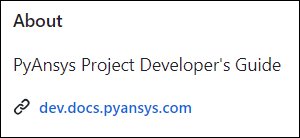
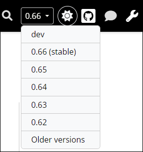

Essentials for content writing#
This page provides essential information for writing content for PyAnsys documentation.
These earlier topics are also related to documentation or contributing to a PyAnsys library:
Documenting provides an overview of key documentation concepts along with some how-to information.
Documentation style provides valuable information about API documentation, Sphinx configuration, NumPy-style docstrings, documentation generation, and tools for documentation style and coverage.
Contributing provides the general coding paradigms for PyAnsys development that you must understand before contributing to a PyAnsys library.
Google developer documentation style guide#
All contributors to PyAnsys documentation must follow the guidelines in the Google developer documentation style guide. While you should become familiar with this entire style guide, periodically revisit the Highlights page to ensure that you are adhering to its most important points.
When the Ansys templates tool is used to create a PyAnsys project from the
pyansys or pyansys-advanced template, Vale, a rule-based tool for maintaining
a consistent style and voice in your documentation, is implemented. This tool, which is one of
many run by the CI/CD process, is configured to check content in RST and Markdown (MD) files
based on the Google developer documentation style guide.
To eliminate or mitigate the number of warnings and errors that Vale raises in a PR, you can install Vale locally and then run it before you create or submit changes to a PR. For more information, see Install Vale and Run Vale locally.
PyAnsys documentation#
On the right of the home page for a PyAnsys library’s GitHub repository, the About area has a link to the library’s documentation. For example, here is the About area for this guide:

You can also view the documentation for public PyAnsys libraries from the PyAnsys landing page or from the Ansys Python Manager by selecting Help > PyAnsys Documentation. For more information about this Python QA app, see Install and use the Ansys Python Manager.
All links to PyAnsys documentation take you to documentation for the stable (latest) release because this is what users of the library generally want to see. In some cases, users might want to see documentation for a legacy version of the library. Project contributors, on the other hand, likely want to see the documentation for the development (main) branch of the library.
Rather than hosting many separate documentation sites, the PyAnsys team supports enabling multi-versions, which makes it possible for you to select the documentation for different versions from a dropdown button on the right side of the documentation title bar.

This dropdown button provides for selecting the documentation for the stable version, development (dev) version, and three previous legacy versions by default. However, the selections it displays can be customized. For more information on enabling and customizing this dropdown button, see Enable multi-version documentation.
- To edit and contribute to the documentation for the development branch, you should select
dev from this dropdown to view the documentation for the main branch.
Tip
When you are viewing PyAnsys documentation, the right navigation pane typically displays Show Source and Edit on GitHub links. For information on using the Show Source link to see how a page’s source file is formatted and how you can reuse this content, see RST file formatting. For information on using the Edit on GitHub link to use the GitHub web editor to submit suggested changes to a page in a PR, see Edit on GitHub.